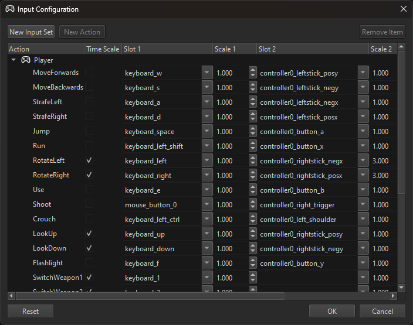

Input Set Configuration
Input sets can be configured either from code, for example from a game state, or through the editor project settings.
The project settings mostly exist for convenience. They allow you to set up a fixed default input scheme, which is useful during development, and doesn't require custom C++ code. A finished game should allow the player to choose their own key binding, though.
From the Editor
Project > Project Settings > Input Configuration... opens a dialog to configure the available input actions.

Using the New Input Set button at the top left, you can add input sets. These typically represent a certain state in your game. For example you may have one set for when the player character is by foot, and another input set for when they are steering a vehicle. Both input sets can use the same keys, but they may represent different actions. Since both states are mutually exclusive in the game, they don't clash. Each input component takes its input state from one specific input set.
Using the New Action button, you can add an action to the selected input set. Each action represents something that the player can do. You can then select a an input slot that triggers this action. Slots represent keyboard keys, controller buttons, voice commands, head movements and everything else that can be considered 'input'. The Scale value allows to adjust how strongly a slot activates the action.
The Time Scale option specifies whether the [0; 1] value of an action will be taken 1:1 from the input slot, or whether the value will be scaled by the amount of time passed between frames.
As an example, many actions like shoot or jump are purely on/off decisions. For these actions time scaling has no use. However, an action like 'rotate left/right' should be something that is smooth and always the same speed, no matter whether the game runs at 30 Hz or at 60 Hz or wildly varies. Thus the value that is given to the game code should be scaled by the time that has passed between frames, such that applying the value to your character or vehicle will still result in a constant, smooth change.
Configuring Available Slots
The input slots that can be chosen in this dialog are listed in files located under Data/Tools/ezEditor/InputSlots. If you want to expose new slots for a custom input device, you can just add a file there. At the moment the available slots are not automatically extracted from the plugins.
From Code
Input actions are registered through ezInputManager::SetInputActionConfig(). The code below shows a game state that uses a helper function to quickly register a couple of actions.
static void RegisterInputAction(const char* szInputSet, const char* szInputAction, const char* szKey1, const char* szKey2 = nullptr, const char* szKey3 = nullptr)
{
ezInputActionConfig cfg;
cfg.m_bApplyTimeScaling = true;
cfg.m_sInputSlotTrigger[0] = szKey1;
cfg.m_sInputSlotTrigger[1] = szKey2;
cfg.m_sInputSlotTrigger[2] = szKey3;
ezInputManager::SetInputActionConfig(szInputSet, szInputAction, cfg, true);
}
void SampleGameState::ConfigureInputActions()
{
SUPER::ConfigureInputActions();
RegisterInputAction("SamplePlugin", "SpawnObject", ezInputSlot_KeyO, ezInputSlot_Controller0_ButtonA, ezInputSlot_MouseButton2);
RegisterInputAction("SamplePlugin", "DeleteObject", ezInputSlot_KeyP, ezInputSlot_Controller0_ButtonB);
}
Building a Key Binding UI
To build a UI where the player can select an action and then press a key to bind it to that action, have a look at ezInputManager::GetPressedInputSlot().
ezInputManager::GetAllInputSets() and ezInputManager::GetAllInputActions() enable you to build the UI for all known actions and sets.
For display purposes there are also ezInputManager::GetInputSlotDisplayName() and ezInputManager::GetActionDisplayName().